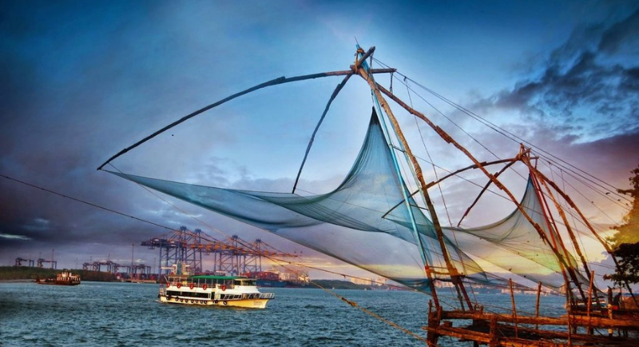

<!DOCTYPE html>
<html lang="en">
<head>
    <meta charset="UTF-8">
    <meta http-equiv="X-UA-Compatible" content="IE=edge">
    <meta name="viewport" content="width=device-width, initial-scale=1.0">
    <title>Ernakulam</title>
</head>
<body>
  
</html>
<!doctype html>
<html lang="en">
  <head>
    <!-- Required meta tags -->
    <meta charset="utf-8">
    <meta name="viewport" content="width=device-width, initial-scale=1">

    <!-- Bootstrap CSS -->
    <link href="https://cdn.jsdelivr.net/npm/bootstrap@5.1.3/dist/css/bootstrap.min.css" rel="stylesheet" integrity="sha384-1BmE4kWBq78iYhFldvKuhfTAU6auU8tT94WrHftjDbrCEXSU1oBoqyl2QvZ6jIW3" crossorigin="anonymous">

    <title>Ernakulam</title>
  </head>
  <body>
    <nav class="navbar navbar-expand-lg navbar-light bg-light">
      <div class="container-fluid">
        <a class="navbar-brand" href="#">
          
        </a>
        <button class="navbar-toggler" type="button" data-bs-toggle="collapse" data-bs-target="#navbarSupportedContent" aria-controls="navbarSupportedContent" aria-expanded="false" aria-label="Toggle navigation">
          <span class="navbar-toggler-icon"></span>
        </button>
        <div class="collapse navbar-collapse" id="navbarSupportedContent">
          <ul class="navbar-nav me-auto mb-2 mb-lg-0">
            <li class="nav-item">
              <a class="nav-link active" aria-current="page" href="index.html">Home</a>
            </li>
            <li class="nav-item">
              <a class="nav-link" href="signup.html">Signup</a>
            </li>
            <li class="nav-item">
              <a class="nav-link" href="#">Login</a>
            </li>
            <li class="nav-item">
              <a class="nav-link" href="districts.html">District</a>
            </li>
          </ul>
          <form class="d-flex">
            <input class="form-control me-2" type="search" placeholder="Search" aria-label="Search">
            <button class="btn btn-outline-success" type="submit">Search</button>
          </form>
        </div>
      </div>
    </nav>
    
    <div class="container">
    <h1><u>Ernakulam</u></h1>
      <p>Ernakulam refers to the eastern, mainland portion of the twin cities of Ernakulam-Kochi in central Kerala, India. Located on the coast of the Arabian Sea, Ernakulam is a booming business metropolis. It is often referred to as the commercial capital of Kerala. Ernakulam has been a part of human settlements since the Stone Age. Rock-cut caves and dolmens are still a part of this city. Ernakulam was ruled by the Chera Dynasty and later, by the Kingdom of Cochin (Perumpadapu Swaroopam). </p>
  
    
      <h5><b> <u> Places to Visit in Ernakulam</u></b></h5>
      <br>
      <ol>
        <li> <b>Bolghatty Island.</b></li>
        <br>
        
        <br>
        <p>The Bolgatty Island, is a historic town, in the commercial capital of Fort Kochi in Ernakulam. The main
          attraction here is the palace of the same name. This island is easily
          accessible from the mainland. India’s one and only international marina, the Kochi International Marina,
          is another important part of this island.
        </p>

        <br>
        <li> <b>Bolghatty Palace.</b></li>
        <br>
        
        <br>
        <p>In the island of Bolgatty lies Kochi’s famous Bolgatty Palace. It is one of the oldest existing Dutch
          palaces in the world. It was built by the Dutch traders in the year 1744 and later was extended and
          gardens were landscaped around it.

          This was at that time the Governor’s palace for the commander of the Dutch Malabar. In the year 1909 it
          was leased out to the British, hence serving as the home of the British Governors. It was also the seat of
          the British Resident of Cochin during the British Raj.

          Later on in the year 1947, when India attained independence from the British, the palace became the
          state’s property and then later was converted into a heritage hotel resort. Now this palace has a swimming
          pool along with a 9 hole golf course and an ayurvedic centre.</p>

        <br>
        <li> <b>Cherai Beach.</b></li>
        <br>
        
        <br>
        <p>Bordering the Vypeen island off Cochin is the lovely beach of Cherai. It is located about 25 kilometers
          away from Kochi and about 30 kilometers from Kochi International
          Airport at Nedumbassery.

          This beach is a popular tourist destination especially among the foreigners. The beach is less busy and
          cleaner as compared to many other beaches in Ernakulam district. Cherai beach is lined with Chinese
          fishing nets, coconut groves and paddy fields offering the perfect setting.
        </p>

        <br>
        <li> <b> Fort Kochi.</b></li>
        <br>

        <br>
        <p>Get nostalgic and get back to the olden days at Fort Kochi, the commercial capital of Kerala. Fort
          Immanuel Thakur House David Hall Parade Ground, Bastion Bungalow Vasco Da Gama square Pierce Leslie
          Bungalow, Bishop's house etc are some of the major attractions of this place. Fort Kochi is one of the
          places in Kerala where you can get to see a diverse range of cultures. From Malayalis to Jews to Dutch,
          you can find traces of their culture here.

          The major highlight of this place is the Chinese Fishing nets, which can be seen, lined in the coastline.
          In all at Fort Kochi you can get to see modernity mixed with tradition. There is no other better option
          than to set off exploring on foot, for the true experience of Fort Kochi. To reach there one can take a
          bus or Ferry from the mainland of Ernakulam.
        </p>

        <br>
        <li> <b>Dutch Cemetery.</b></li>
        <br>
        
        <br>
        <p>Forming an evidence of Kochi’s connection with the Dutch is the Dutch cemetery at Fort Kochi. It was
          sanctified in the year 1724 and till date contains almost 104 epitaphs and tombs, containing authentic
          details of the Dutch and British people buried there. Seeing all this, visitors who come here are reminded
          of the foreigners who came to Kochi so as to expand their empires.

          The St. Francis Church maintains the record of those who were buried here and the Church of South India
          (CSI) is who manages the cemetery. The tombs at this place are made out of granite and red laterite stones
          but do not have a cross. The inscriptions in each of the epitaph are in the Old Dutch script. No longer
          used, the last person to be buried here, according to the author TW Venn, was Captain Joseph Ethelbert
          Winckler, in the year 1913.


        </p>

        <br>
      </ol>

    </div>
    <!-- Optional JavaScript; choose one of the two! -->

    <!-- Option 1: Bootstrap Bundle with Popper -->
    <script src="https://cdn.jsdelivr.net/npm/bootstrap@5.1.3/dist/js/bootstrap.bundle.min.js" integrity="sha384-ka7Sk0Gln4gmtz2MlQnikT1wXgYsOg+OMhuP+IlRH9sENBO0LRn5q+8nbTov4+1p" crossorigin="anonymous"></script>

    <!-- Option 2: Separate Popper and Bootstrap JS -->
    <!--
    <script src="https://cdn.jsdelivr.net/npm/@popperjs/core@2.10.2/dist/umd/popper.min.js" integrity="sha384-7+zCNj/IqJ95wo16oMtfsKbZ9ccEh31eOz1HGyDuCQ6wgnyJNSYdrPa03rtR1zdB" crossorigin="anonymous"></script>
    <script src="https://cdn.jsdelivr.net/npm/bootstrap@5.1.3/dist/js/bootstrap.min.js" integrity="sha384-QJHtvGhmr9XOIpI6YVutG+2QOK9T+ZnN4kzFN1RtK3zEFEIsxhlmWl5/YESvpZ13" crossorigin="anonymous"></script>
    -->
  </body>
</html>